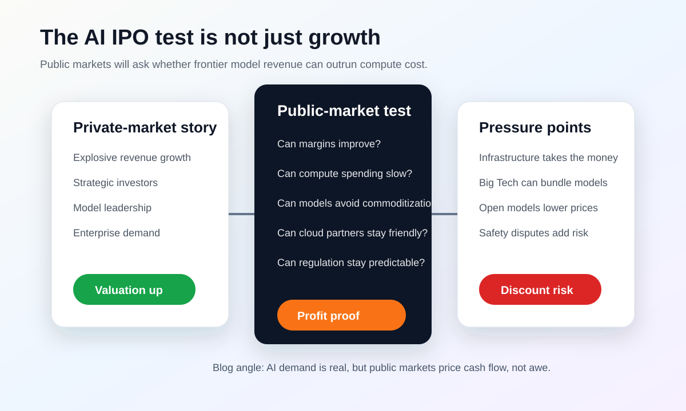

OpenAI와 Anthropic, 상장시장은 AI 열광을 그대로 사줄까
AI 기업의 비상장 가치평가는 계속 커졌지만, 공개시장은 조금 다른 질문을 던진다. “성장은 알겠는데, 이 회사가 장기적으로 돈을 얼마나 남길 수 있는가?”

오늘의 경제 뉴스
AI 모델 회사도 결국 공개시장에서는 수익성을 증명해야 한다
Financial Times는 OpenAI와 Anthropic이 높은 비상장 가치평가에도 불구하고, 향후 상장 과정에서 공개시장 투자자들의 더 까다로운 검증을 받을 수 있다고 짚었다. 핵심은 AI 수요가 없다는 말이 아니다. 수요는 크지만, 그 수요에서 누가 실제 이익을 가져가느냐가 아직 완전히 분명하지 않다는 점이다.
상장은 자금조달 행사가 아니라 회계 공개 행사다
비상장 시장에서는 소수 투자자가 장기 전망과 전략적 관계를 근거로 가격을 정할 수 있다. 상장 뒤에는 분기마다 매출, 비용, 현금흐름, 고객 집중도와 위험요인을 같은 형식으로 공개해야 한다. 모델 성능이 좋다는 설명만으로는 부족하고, 그 성능을 유지하는 데 얼마를 쓰며 한 번의 질문에서 실제로 얼마가 남는지 보여줘야 한다.
Financial Times가 두 회사의 상장 난도를 짚은 이유는 수요 부족 때문이 아니다. 기업용 코딩, 문서 분석, 고객지원과 소비자 구독에서 매출이 빠르게 늘고 있어도 학습과 추론에 들어가는 GPU·클라우드·네트워크 비용이 함께 커진다. 성장률과 단위경제성이 동시에 좋아져야 소프트웨어 기업에 가까운 높은 가치평가를 유지할 수 있다.
현재 공개된 IPO 일정과 조건은 확정된 사실로 보기 어렵다. 언론 보도에서 준비 가능성이 거론되더라도 증권당국에 제출하는 등록서와 거래소 일정이 공식화되기 전까지는 ‘상장 검토 또는 준비 단계’로 표현하는 것이 안전하다. 이 글 역시 어느 회사가 먼저 상장한다고 단정하지 않고, 상장이 현실화될 때 시장이 무엇을 볼지에 초점을 맞춘다.
매출 숫자보다 먼저 볼 것은 매출의 질
AI 기업의 매출은 소비자 구독, API 사용료, 기업용 좌석 계약, 클라우드 파트너를 통한 판매처럼 성격이 다른 항목으로 구성된다. 반복되는 장기 계약인지, 할인과 크레딧으로 만든 일시적 사용량인지에 따라 같은 1달러의 가치가 달라진다. 클라우드 파트너가 판매한 금액을 회사가 어떻게 매출로 인식하는지도 기업 간 단순 비교를 어렵게 만든다.
고객 집중도도 중요하다. 소수 대기업이 사용량의 큰 몫을 차지하면 빠르게 성장하기 쉽지만, 한 고객이 자체 모델이나 다른 공급자로 옮길 때 충격이 크다. 공개시장은 순매출유지율, 계약 잔액, 상위 고객 비중, 소비자 유료 전환율 같은 지표를 요구할 가능성이 높다.
코딩 에이전트의 성장은 좋은 사례다. 개발자가 매일 쓰는 도구가 되면 사용 빈도와 지불 의사가 높아질 수 있다. 반면 에이전트가 더 오래 추론하고 더 많은 토큰을 쓰면 서비스 원가도 커진다. 좌석당 정액 가격이 실제 사용 비용을 감당하는지, 무거운 사용자를 제한하거나 별도 과금하는지가 수익성의 핵심이 된다.
컴퓨팅 약정은 경쟁력인 동시에 부채와 비슷한 부담이다
프런티어 모델 회사는 안정적인 GPU와 데이터센터 용량을 확보하기 위해 수년짜리 클라우드 계약과 대규모 인프라 약정을 맺는다. 이 약정은 경쟁사가 따라오기 어려운 공급 우위를 만들지만, 예상보다 수요가 느리거나 더 효율적인 모델이 나오면 사용하지 못한 용량의 비용이 남는다. 상장 투자자는 약정 총액, 취소 조건, 최소 사용량과 파트너 의존도를 세밀하게 볼 것이다.
회계상 이익과 현금 소진도 구분해야 한다. 데이터센터·칩 비용을 여러 해에 나눠 인식하거나 파트너가 일부 설비를 소유하면 손익계산서의 비용 시점과 실제 현금 유출 시점이 달라질 수 있다. 그래서 조정 EBITDA만이 아니라 영업현금흐름, 설비와 클라우드 약정, 주식보상까지 함께 봐야 한다.
두 회사가 클라우드 대기업과 맺은 관계는 특히 복잡하다. 파트너는 투자자이자 GPU 공급자이고, 판매 채널이자 때로는 자체 모델을 가진 경쟁자다. 자금과 컴퓨팅을 제공받는 대신 장기 구매 약정이나 매출 배분이 붙는다면 외형 매출이 커져도 모델 회사에 남는 몫은 작아질 수 있다.
모델 격차가 줄어들면 가격 결정력이 시험받는다
높은 가치평가는 선두 모델이 오랫동안 성능 우위를 유지한다는 가정을 담는다. 그러나 Google, Meta, xAI, 중국 기업과 오픈웨이트 모델이 추격하면 고객은 작업별로 모델을 바꾸거나 여러 모델을 묶어 쓸 수 있다. 라우팅 기술이 좋아질수록 한 회사에 대한 잠금 효과는 약해진다.
방어력은 모델 점수만으로 만들어지지 않는다. 기업 데이터 연결, 보안 인증, 개발자 도구, 에이전트 운영 환경, 오류 추적과 장기 계약이 제품을 바꾸기 어렵게 만든다. 상장시장은 연구 성과와 함께 이런 반복 가능한 유통·운영 자산이 실제 고객 유지로 이어지는지 확인할 것이다.
지배구조와 안전 비용도 할인 요인이 될 수 있다
프런티어 AI 기업은 일반 소프트웨어 회사보다 공익 목적, 안전 정책, 정부와의 협의가 경영에 더 직접적으로 작용한다. 모델 공개를 늦추거나 특정 고객의 접근을 제한하면 안전 측면에서는 합리적일 수 있지만 단기 매출에는 부담이 된다. 반대로 위험을 무시하고 빠르게 출시하면 규제와 소송, 평판 손실이 커질 수 있다.
투자자는 의결권 구조와 이사회 권한, 비영리 또는 공익 조직과의 관계, 핵심 연구자의 이탈 가능성을 살핀다. 창업자 통제권이 너무 강하면 일반 주주의 견제가 약해지고, 반대로 단기 실적 압박이 너무 강하면 안전 연구와 장기 투자가 흔들릴 수 있다. AI 기업의 지배구조는 제품 출시 속도와 위험 허용 수준을 결정하는 변수다.
공개시장이 요구할 다섯 가지 숫자
첫째는 고객 유형별 반복 매출과 성장률, 둘째는 추론 원가를 반영한 총이익률이다. 셋째는 장기 컴퓨팅 약정과 실제 사용률, 넷째는 연구개발과 주식보상을 포함한 현금 소진, 다섯째는 상위 고객 및 클라우드 파트너 의존도다. 이 수치들이 개선되면 AI 수요가 지속 가능한 사업으로 바뀌고 있다는 증거가 된다.
반대로 매출은 빠르게 늘지만 총이익률이 낮아지고 약정이 매출보다 더 빨리 쌓인다면, 성장은 막대한 선투자로 구매한 것일 수 있다. 토큰 가격 인하와 모델 효율 개선이 원가를 낮추는지, 아니면 더 많은 사용량이 절감분을 모두 흡수하는지도 분기별로 확인해야 한다.
한국 시장에 던지는 질문
한국의 클라우드·반도체·데이터센터 기업에는 대형 AI 연구소의 상장이 수요를 투명하게 보여주는 계기가 될 수 있다. 컴퓨팅 약정과 GPU 투자 계획이 공개되면 HBM, 전력 설비, 서버와 네트워크의 실제 성장 경로를 추정하기 쉬워진다. 동시에 모델 기업의 비용 압박이 커지면 더 싼 추론 칩과 효율적인 데이터센터 운영을 요구하는 압력도 강해진다.
AI 서비스를 도입하는 국내 기업은 공급자의 높은 가치평가보다 계약의 지속 가능성을 봐야 한다. 가격 인상 조건, 모델 종료 시 데이터 이전, 두 번째 공급자로 전환할 수 있는 구조와 사용량 상한을 미리 설계해야 한다. 한 회사의 IPO 성공 여부보다 멀티모델 운영 능력이 현장에는 더 직접적인 위험 관리다.
내가 보는 핵심
OpenAI와 Anthropic의 상장은 AI 붐의 끝을 판정하는 사건이 아니라, AI 사업의 원가가 처음으로 정기적이고 비교 가능한 숫자로 드러나는 순간이 될 가능성이 크다. 수요는 이미 강하지만 그 수요를 서비스할수록 현금이 얼마나 남는지는 별개의 문제다.
결국 시장이 살 것은 ‘가장 똑똑한 모델’이 아니라 성능 우위를 고객 유지와 현금흐름으로 바꾸는 조직이다. 공식 상장 서류가 나오기 전에는 일정과 가치평가를 단정하지 말고, 나온 뒤에는 매출보다 총이익률·컴퓨팅 약정·현금 소진을 먼저 보는 것이 맞다.
출처와 확인 링크
- Financial Times: Why OpenAI and Anthropic may struggle to float
- Financial Times: Son remakes SoftBank in his own image
- Axios: AI governance and tech executives context
- Wall Street Journal: AI-company investor documents and accounting differences
- The Week: the AI IPO race and public-market tolerance for compute spending
- J.P. Morgan Private Bank: 2026 AI compute commitments context